CODING AGENTS AS PIXEL WORLD MODELS
traex/GPT-5.6-Sol · 0138
点击播放 · 原生 RGB 像素
逐轮保存的候选
回放视频、检查图与代码变化。
每份候选均可单独播放。实际图片检查记录在下方工具轨迹中。
候选 01播放与检查图
点击播放 · 原生 RGB 像素
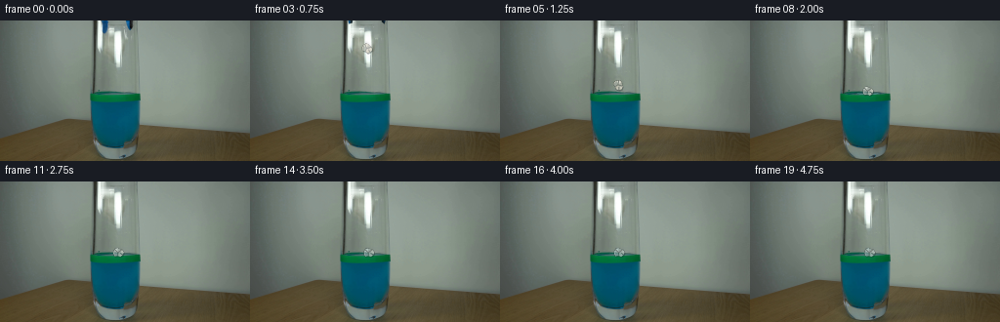
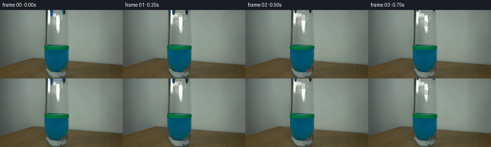
展开代码变化
--- 上一保存版本
+++ 本次保存版本
@@ -0,0 +1,280 @@
+from pathlib import Path
+import math
+
+import cv2
+import numpy as np
+from PIL import Image
+
+import artifact_io
+
+
+HERE = Path(__file__).resolve().parent
+W, H = 256, 144
+S = 4 # supersampling for small, antialiased details
+
+
+def over(dst, rgba):
+ """Alpha composite an RGBA uint8 layer over an RGB uint8 image."""
+ a = rgba[..., 3:4].astype(np.float32) / 255.0
+ return np.clip(rgba[..., :3] * a + dst * (1.0 - a), 0, 255).astype(np.uint8)
+
+
+def downsample(layer):
+ return cv2.resize(layer, (W, H), interpolation=cv2.INTER_AREA)
+
+
+def rgba_canvas():
+ return np.zeros((H * S, W * S, 4), np.uint8)
+
+
+def P(points):
+ return np.rint(np.asarray(points, np.float32) * S).astype(np.int32)
+
+
+def make_clean_plate(rgb):
+ """Remove only the two small jaws, retaining the glass and highlights."""
+ bgr = cv2.cvtColor(rgb, cv2.COLOR_RGB2BGR)
+ mask = np.zeros((H, W), np.uint8)
+ # Tight masks around the blue/black tips which enter from above.
+ cv2.rectangle(mask, (103, 0), (111, 17), 255, -1)
+ cv2.rectangle(mask, (127, 0), (136, 17), 255, -1)
+ clean = cv2.inpaint(bgr, mask, 4, cv2.INPAINT_TELEA)
+ clean = cv2.cvtColor(clean, cv2.COLOR_BGR2RGB)
+ # Inpainting at the cut frame edge can be slightly mottled. A weak
+ # vertical glass-colour interpolation makes the vacated areas natural.
+ for x0, x1 in ((103, 111), (127, 136)):
+ for x in range(x0, x1 + 1):
+ source_x = 114 if x < 120 else 125
+ mix = 0.28
+ clean[:14, x] = np.clip(
+ clean[:14, x].astype(float) * (1 - mix)
+ + clean[:14, source_x].astype(float) * mix, 0, 255
+ ).astype(np.uint8)
+ return clean
+
+
+def draw_grabber(frame, phase):
+ """Draw the blue-black jaws opening and withdrawing through the top."""
+ # phase 0 is almost the initial pose; phase 1 is fully out of view.
+ if phase >= 0.98:
+ return frame
+ layer = rgba_canvas()
+ lift = 12.5 * phase
+ spread = 5.5 * phase
+ tip_y = 13.0 - lift
+
+ # Each tapered jaw has a blue shell, near-black gripping face, and a
+ # narrow specular streak. Coordinates match the original tool closely.
+ left = [
+ (102.8 - spread, -6 - lift), (109.5 - spread, -6 - lift),
+ (110.5 - spread, 5 - lift), (109.2 - spread, tip_y),
+ (106.0 - spread, tip_y + 1), (104.2 - spread, 6 - lift)
+ ]
+ right = [
+ (128.7 + spread, -6 - lift), (135.0 + spread, -6 - lift),
+ (134.6 + spread, 7 - lift), (132.8 + spread, tip_y + 1),
+ (130.2 + spread, tip_y - 1), (129.0 + spread, 4 - lift)
+ ]
+ cv2.fillPoly(layer, [P(left)], (10, 74, 125, 242), cv2.LINE_AA)
+ cv2.fillPoly(layer, [P(right)], (7, 50, 92, 245), cv2.LINE_AA)
+ # Dark inner gripping surfaces face one another.
+ li = [(107.8-spread, -3-lift), (110.5-spread, 0-lift),
+ (109.2-spread, tip_y), (107.1-spread, tip_y+0.5)]
+ ri = [(128.7+spread, -3-lift), (131.0+spread, -3-lift),
+ (132.8+spread, tip_y+1), (130.3+spread, tip_y-1)]
+ cv2.fillPoly(layer, [P(li)], (9, 25, 31, 225), cv2.LINE_AA)
+ cv2.fillPoly(layer, [P(ri)], (6, 19, 27, 235), cv2.LINE_AA)
+ cv2.polylines(layer, [P([(104.6-spread, -3-lift), (106.1-spread, 6-lift)])],
+ False, (38, 139, 192, 190), max(1, S//2), cv2.LINE_AA)
+ cv2.polylines(layer, [P([(130.1+spread, -3-lift), (131.0+spread, 5-lift)])],
+ False, (24, 115, 176, 160), max(1, S//2), cv2.LINE_AA)
+ return over(frame, downsample(layer))
+
+
+PAPER_SHAPE = np.array([
+ (-5.2, -1.0), (-4.0, -4.0), (-1.4, -4.8), (0.2, -3.4),
+ (2.7, -4.1), (5.1, -1.7), (4.5, 1.0), (2.5, 3.5),
+ (-0.4, 2.8), (-3.4, 3.8), (-5.0, 1.3)
+], np.float32)
+
+
+def transform_points(points, cx, cy, angle, scale=1.0):
+ a = math.radians(angle)
+ rot = np.array([[math.cos(a), -math.sin(a)],
+ [math.sin(a), math.cos(a)]], np.float32)
+ return points.dot(rot.T) * scale + np.array([cx, cy], np.float32)
+
+
+def paper_layer(cx, cy, angle, wet=0.0, alpha=255, scale=1.0, soft=False):
+ """A tiny faceted, irregular crumpled paper ball."""
+ layer = rgba_canvas()
+ pts = transform_points(PAPER_SHAPE, cx, cy, angle, scale)
+ # Very small contact/air shadow supplies depth without a cartoon outline.
+ sh = pts + np.array([0.7, 1.2], np.float32)
+ cv2.fillPoly(layer, [P(sh)], (26, 39, 39, int(80 * alpha / 255)), cv2.LINE_AA)
+
+ dry = np.array([205, 203, 188], float)
+ soaked = np.array([116, 164, 165], float)
+ col = tuple(map(int, np.rint(dry*(1-wet) + soaked*wet))) + (int(alpha),)
+ cv2.fillPoly(layer, [P(pts)], col, cv2.LINE_AA)
+
+ # Irregular facets. All vertices lie inside the outer polygon.
+ local_facets = [
+ ([(-4.0,-3.0), (-1.4,-4.5), (-0.7,-0.3), (-4.7,-0.9)],
+ (231, 230, 217, int(alpha*.82))),
+ ([(-0.7,-0.3), (-1.4,-4.5), (2.7,-3.7), (2.0,-0.1)],
+ (184, 184, 172, int(alpha*.72))),
+ ([(2.0,-0.1), (2.7,-3.7), (4.8,-1.5), (4.0,1.0)],
+ (220, 216, 199, int(alpha*.78))),
+ ([(-4.7,-0.9), (-0.7,-0.3), (-0.4,2.6), (-3.2,3.3)],
+ (173, 178, 169, int(alpha*.64))),
+ ([(-0.7,-0.3), (2.0,-0.1), (2.3,3.1), (-0.4,2.6)],
+ (216, 211, 193, int(alpha*.70))),
+ ]
+ tint = np.array([72, 137, 153], float)
+ for fp, fc in local_facets:
+ q = transform_points(np.asarray(fp, np.float32), cx, cy, angle, scale)
+ rgb = np.array(fc[:3], float)
+ rgb = np.rint(rgb*(1-wet*.48) + tint*(wet*.48)).astype(int)
+ cv2.fillPoly(layer, [P(q)], tuple(map(int, rgb)) + (int(fc[3]),), cv2.LINE_AA)
+
+ # Three creases survive even when the paper is damp.
+ crease = (91, 95, 91, int(alpha * (0.52 - .15*wet)))
+ for line in [([(-4.1,-2.8),(-.7,-.3),(2.4,-3.5)]),
+ ([(-.7,-.3),(-.3,2.5)]),
+ ([(2.0,-.1),(4.1,1.0)])]:
+ q = transform_points(np.asarray(line, np.float32), cx, cy, angle, scale)
+ cv2.polylines(layer, [P(q)], False, crease, max(2, S//2), cv2.LINE_AA)
+ if soft:
+ layer = cv2.GaussianBlur(layer, (0, 0), 1.15*S)
+ return downsample(layer)
+
+
+def draw_liquid_disturbance(frame, index):
+ """Short splash, then diminishing elliptical surface ripples."""
+ if index < 6 or index > 13:
+ return frame
+ layer = rgba_canvas()
+ age = index - 6
+ cx = 120.5
+ if age == 0:
+ # Contact dimple and two physically small crown sheets/droplets.
+ cv2.ellipse(layer, (int(cx*S), int(75*S)), (int(8*S), int(2.1*S)),
+ 0, 182, 356, (18, 93, 105, 205), max(2, S), cv2.LINE_AA)
+ cv2.polylines(layer, [P([(113,75),(114.5,70),(116,73)])], False,
+ (31, 135, 146, 215), max(2, S), cv2.LINE_AA)
+ cv2.polylines(layer, [P([(124,73.5),(126,68.8),(127,74.8)])], False,
+ (36, 148, 157, 210), max(2, S), cv2.LINE_AA)
+ cv2.circle(layer, tuple(P([(126.1,66.8)])[0]), max(2,S),
+ (48, 161, 166, 205), -1, cv2.LINE_AA)
+ cv2.circle(layer, tuple(P([(113.6,68.2)])[0]), max(1,S//2),
+ (56, 164, 167, 175), -1, cv2.LINE_AA)
+ else:
+ strength = max(0.0, 1.0 - age / 8.0)
+ rx = (8 + 2.7*age)
+ ry = 1.3 + .12*age
+ color1 = (18, 74, 78, int(145*strength))
+ color2 = (76, 170, 158, int(120*strength))
+ cv2.ellipse(layer, (int(cx*S), int(75.0*S)), (int(rx*S), int(ry*S)),
+ 0, 187, 355, color1, max(2, S), cv2.LINE_AA)
+ if age < 5:
+ cv2.ellipse(layer, (int(cx*S), int(74.7*S)),
+ (int((rx-3)*S), max(S, int((ry-.35)*S))),
+ 0, 4, 176, color2, max(2, S), cv2.LINE_AA)
+ return over(frame, downsample(layer))
+
+
+def restore_front_band(frame, original, x_center=120):
+ """The paper is inside the glass; the front half of the green band is in front."""
+ yy, xx = np.mgrid[0:H, 0:W]
+ # Soft foreground mask begins at the front-side horizon and follows a
+ # shallow ellipse, avoiding a visibly straight compositing edge.
+ edge = 77.1 + 0.0048 * (xx - x_center) ** 2
+ m = np.clip((yy - edge + .5) / 1.4, 0, 1)
+ m *= ((xx >= 93) & (xx <= 143) & (yy <= 84))
+ # Keep splash droplets above the rim; only band pixels are restored.
+ band = (yy >= 77) & (yy <= 83)
+ m *= band
+ m = cv2.GaussianBlur(m.astype(np.float32), (0, 0), .35)
+ return np.clip(frame*(1-m[...,None]) + original*m[...,None], 0, 255).astype(np.uint8)
+
+
+def add_glass_glints(frame, original, paper_y):
+ """Reapply faint original reflections so the falling paper reads behind glass."""
+ if paper_y >= 78:
+ return frame
+ yy, xx = np.mgrid[0:H, 0:W]
+ # Main reflected window, localized to the glass interior.
+ m = np.exp(-((xx-114.0)/2.8)**2) * ((yy > 7) & (yy < 61))
+ m += .45*np.exp(-((xx-127.0)/1.7)**2) * ((yy > 18) & (yy < 55))
+ # Only a weak optical veil; static pixels outside overlays stay untouched.
+ m = np.clip(m*.16, 0, .16)
+ return np.clip(frame*(1-m[...,None]) + original*m[...,None], 0, 255).astype(np.uint8)
+
+
+def generate():
+ original = np.asarray(Image.open(HERE / "first_frame.png").convert("RGB"), dtype=np.uint8)
+ assert original.shape == (H, W, 3)
+ clean = make_clean_plate(original)
+ frames = []
+
+ # Hand-tuned positions sampled at the required real-time 4 fps. The
+ # increasing intervals are a gravity cue. Contact occurs at 1.5 s.
+ falling = {
+ 1: (119.0, 9.5, 4),
+ 2: (119.3, 17.0, 17),
+ 3: (119.8, 29.0, 31),
+ 4: (120.5, 46.5, 47),
+ 5: (120.8, 66.5, 64),
+ 6: (120.5, 73.5, 76),
+ }
+
+ for i in range(20):
+ if i == 0:
+ frames.append(original.copy())
+ continue
+
+ frame = clean.copy()
+ # Jaws open while retracting over the first second.
+ frame = draw_grabber(frame, min(1.0, i / 3.5))
+ frame = draw_liquid_disturbance(frame, i)
+
+ if i in falling:
+ cx, cy, ang = falling[i]
+ # A subtle exposure-like trail is appropriate at 1/4-second
+ # sampling, strongest just before impact.
+ if i >= 3:
+ trail_len = 1.4 + (i-3)*1.0
+ ghost = paper_layer(cx-.12, cy-trail_len, ang-3, wet=0,
+ alpha=50 if i < 6 else 36,
+ scale=.96, soft=True)
+ frame = over(frame, ghost)
+ wet = .16 if i == 6 else 0.0
+ frame = over(frame, paper_layer(cx, cy, ang, wet=wet,
+ alpha=252, scale=1.0))
+ paper_y = cy
+ else:
+ # The crumple floats and slowly becomes damp. Its tiny bob and
+ # rotation decay, rather than freezing immediately after impact.
+ t = i - 6
+ cx = 120.5 + 0.16*t
+ cy = 73.15 + 0.60*math.exp(-t/4.0)*math.cos(t*1.55)
+ ang = 8.0 + 8.0*math.exp(-t/3.2)*math.sin(t*1.35)
+ wet = min(.62, .15 + .047*t)
+ frame = over(frame, paper_layer(cx, cy, ang, wet=wet,
+ alpha=252, scale=1.02))
+ paper_y = cy
+
+ frame = add_glass_glints(frame, original, paper_y)
+ frame = restore_front_band(frame, original)
+ frames.append(frame)
+
+ frames = np.stack(frames).astype(np.uint8)
+ # Contract-critical identity check.
+ assert np.array_equal(frames[0], original)
+ return frames
+
+
+if __name__ == "__main__":
+ artifact_io.save(generate(), HERE)
+
候选 02播放与检查图
点击播放 · 原生 RGB 像素

展开代码变化
--- 上一保存版本
+++ 本次保存版本
@@ -158,17 +158,16 @@
age = index - 6
cx = 120.5
if age == 0:
- # Contact dimple and two physically small crown sheets/droplets.
+ # Contact dimple and two physically small crown sheets. Paper is
+ # light, so this is deliberately restrained rather than a tall splash.
cv2.ellipse(layer, (int(cx*S), int(75*S)), (int(8*S), int(2.1*S)),
0, 182, 356, (18, 93, 105, 205), max(2, S), cv2.LINE_AA)
- cv2.polylines(layer, [P([(113,75),(114.5,70),(116,73)])], False,
- (31, 135, 146, 215), max(2, S), cv2.LINE_AA)
- cv2.polylines(layer, [P([(124,73.5),(126,68.8),(127,74.8)])], False,
- (36, 148, 157, 210), max(2, S), cv2.LINE_AA)
- cv2.circle(layer, tuple(P([(126.1,66.8)])[0]), max(2,S),
- (48, 161, 166, 205), -1, cv2.LINE_AA)
- cv2.circle(layer, tuple(P([(113.6,68.2)])[0]), max(1,S//2),
- (56, 164, 167, 175), -1, cv2.LINE_AA)
+ cv2.polylines(layer, [P([(113.5,75),(114.6,72.0),(116,74)])], False,
+ (31, 128, 140, 180), max(2, S), cv2.LINE_AA)
+ cv2.polylines(layer, [P([(124,74),(125.5,71.3),(126.5,75)])], False,
+ (36, 139, 150, 180), max(2, S), cv2.LINE_AA)
+ cv2.circle(layer, tuple(P([(125.6,70.4)])[0]), max(1,S//2),
+ (56, 153, 160, 145), -1, cv2.LINE_AA)
else:
strength = max(0.0, 1.0 - age / 8.0)
rx = (8 + 2.7*age)
可观测工具轨迹
实际执行的命令与返回图片。
命令 1exit 0
/bin/bash -lc "cat prompt.txt && printf '\\n--- GENERATION RULES ---\\n' && cat GENERATION_RULES.md"
命令 2exit 1
/bin/bash -lc "find . -maxdepth 2 -type f -printf '%p %s bytes\\n' | sort && printf '\\nTools:\\n' && command -v ffmpeg && command -v python3 && python3 - <<'PY'
try:
import cv2; print('cv2', cv2.__version__)
except Exception as e: print('no cv2',e)
try:
from PIL import Image; print('PIL ok')
except Exception as e: print('no PIL',e)
PY"命令 3exit 0
/bin/bash -lc 'cat artifact_io.py'
命令 4exit 0
/bin/bash -lc "command -v python3 || true; command -v ffmpeg || true; python3 - <<'PY' mods=['numpy','PIL','cv2','imageio','scipy'] for m in mods: try: x=__import__(m); print(m, getattr(x,'__version__','ok')) except Exception as e: print(m,'NO',e) PY"
命令 5exit 0
/bin/bash -lc "mkdir -p .tmp && python3 - <<'PY'
from PIL import Image,ImageEnhance
im=Image.open('first_frame.png')
im.resize((1024,576), Image.Resampling.NEAREST).save('.tmp/up_nearest.png')
im.crop((80,0,165,100)).resize((680,800),Image.Resampling.NEAREST).save('.tmp/crop_nearest.png')
im.crop((80,0,165,100)).resize((680,800),Image.Resampling.LANCZOS).save('.tmp/crop_smooth.png')
PY"命令 6exit 0
/bin/bash -lc "python3 - <<'PY'
from PIL import Image
im=Image.open('first_frame.png')
for box,name in [((88,0,148,65),'top'),((88,55,148,95),'surface')]:
im.crop(box).resize(((box[2]-box[0])*12,(box[3]-box[1])*12),Image.Resampling.NEAREST).save(f'.tmp/{name}.png')
PY"命令 7exit 0
/bin/bash -lc "python3 - <<'PY'
import cv2, numpy as np
im=cv2.imread('first_frame.png')
hsv=cv2.cvtColor(im,cv2.COLOR_BGR2HSV)
# print coordinates whose saturation >80 or value <80 within top glass
for y in range(20):
xs=[]
for x in range(94,145):
h,s,v=hsv[y,x]
if s>80 and v<180: xs.append(x)
if xs: print(y,min(xs),max(xs),xs)
PY"命令 8exit 1
/bin/bash -lc "python3 generate.py && python3 - <<'PY'
import numpy as np
from PIL import Image
z=np.load('pixels.npz')['pixels']
print('pixels',z.shape,z.dtype)
f=np.stack([np.asarray(Image.open(f'frames/{i:02d}.png')) for i in range(20)])
orig=np.asarray(Image.open('first_frame.png'))
print('frames',f.shape,f.dtype,'frame0 exact',np.array_equal(f[0],orig))
print('changed pixels:',[int(np.any(f[i]"'!=f[i-1],axis=2).sum()) for i in range(1,20)])
PY'命令 9exit 0
/bin/bash -lc "python3 generate.py && python3 - <<'PY'
import numpy as np
from PIL import Image
z=np.load('pixels.npz')['pixels']
print('pixels',z.shape,z.dtype)
f=np.stack([np.asarray(Image.open(f'frames/{i:02d}.png')) for i in range(20)])
orig=np.asarray(Image.open('first_frame.png'))
print('frames',f.shape,f.dtype,'frame0 exact',np.array_equal(f[0],orig))
print('changed pixels:',[int(np.any(f[i]"'!=f[i-1],axis=2).sum()) for i in range(1,20)])
PY'命令 10exit 0
/bin/bash -lc "python3 - <<'PY'
from PIL import Image,ImageDraw
ims=[Image.open(f'frames/{i:02d}.png').resize((512,288),Image.Resampling.NEAREST) for i in range(20)]
out=Image.new('RGB',(512*5,310*4),(20,20,20)); d=ImageDraw.Draw(out)
for i,im in enumerate(ims):
x=(i%5)*512;y=(i//5)*310
d.text((x+4,y+3),f'{i:02d} {i/4:.2f}s',fill='white');out.paste(im,(x,y+22))
out.save('.tmp/all20.png')
# crop action frames at 6x smooth
for i in range(0,10):
im=Image.open(f'frames/{i:02d}.png').crop((90,0,148,88)).resize((348,528),Image.Resampling.NEAREST)
im.save(f'.tmp/action{i:02d}.png')
PY"命令 11exit 0
/bin/bash -lc "python3 generate.py && python3 - <<'PY'
import ast, hashlib, json
from pathlib import Path
import numpy as np
from PIL import Image
# Syntax/runnability and artifact contract checks
ast.parse(Path('generate.py').read_text())
files=[Path(f'frames/{i:02d}.png') for i in range(20)]
f=np.stack([np.asarray(Image.open(p).convert('RGB')) for p in files])
o=np.asarray(Image.open('first_frame.png').convert('RGB'))
assert f.shape==(20,144,256,3) and f.dtype==np.uint8
assert np.array_equal(f[0],o)
z=np.load('pixels.npz')['pixels']; assert z.shape==(144,256,20)
# reconstruct RGB from packed tensor and compare exact output
u=z.transpose(2,0,1)
r=np.stack([(u>>16)&255,(u>>8)&255,u&255],axis=-1).astype(np.uint8)
assert np.array_equal(r,f)
print('VALID')
print('frame0 sha256',hashlib.sha256(f[0].tobytes()).hexdigest())
print('source sha256',hashlib.sha256(o.tobytes()).hexdigest())
print('shape/dtype',f.shape,f.dtype)
print('artifacts',[(p.name,p.stat().st_size) for p in [Path('pixels.npz'),Path('inspection.png'),Path('transition_check.png'),Path('index.html')]])
print('generate.py bytes',Path('generate.py').stat().st_size)
PY"视觉工具实际返回图片 1

视觉工具实际返回图片 2
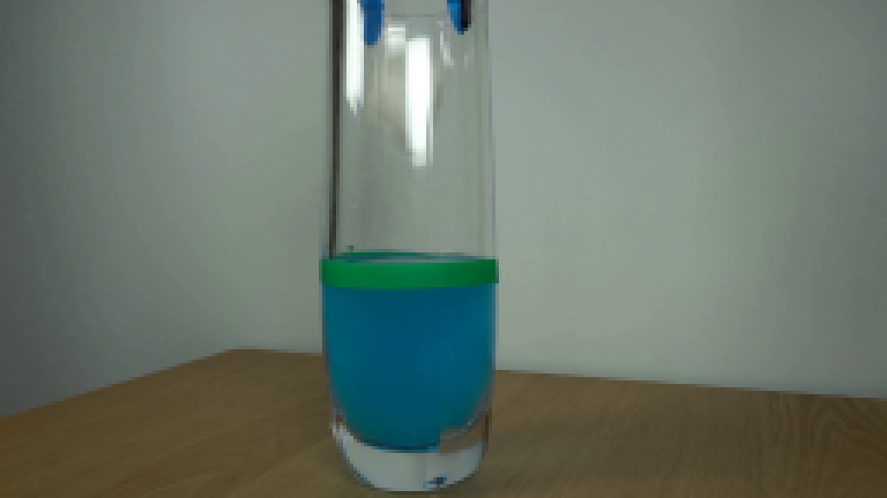
视觉工具实际返回图片 3
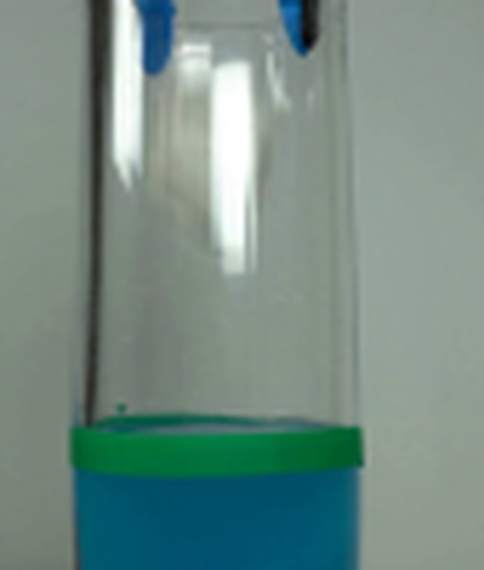
视觉工具实际返回图片 4
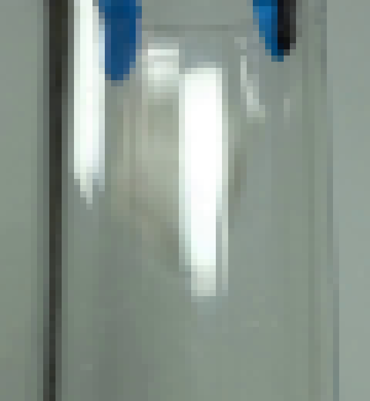
视觉工具实际返回图片 5
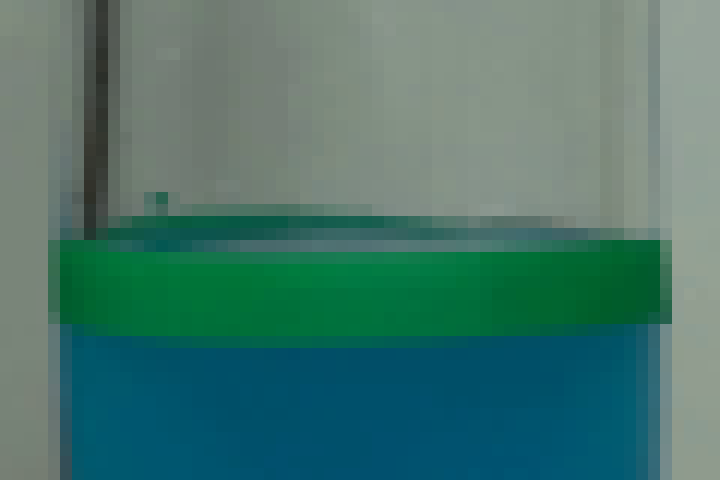
视觉工具实际返回图片 6

视觉工具实际返回图片 7

视觉工具实际返回图片 8
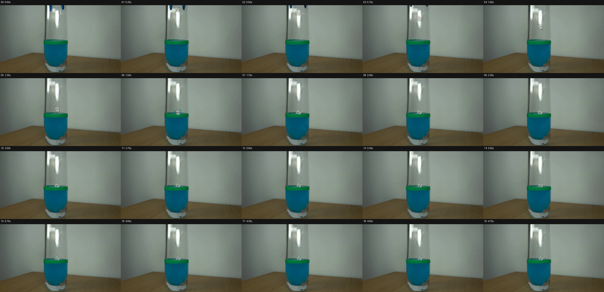
视觉工具实际返回图片 9
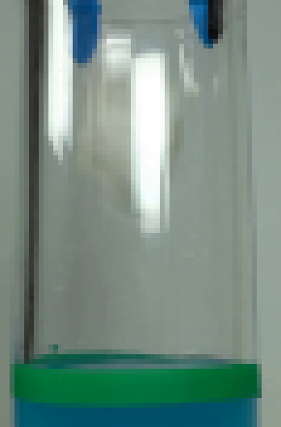
视觉工具实际返回图片 10
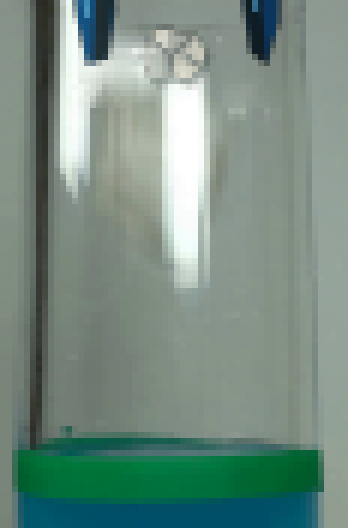
视觉工具实际返回图片 11
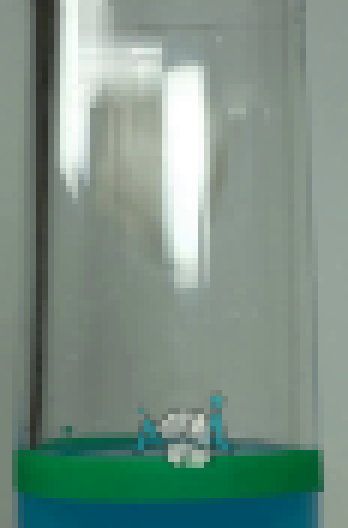
视觉工具实际返回图片 12
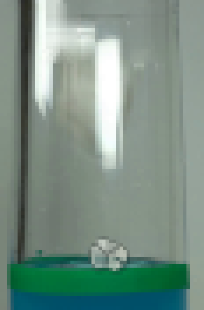
保存候选 2 份；完成命令 11 次；可验证图片返回 12 张。原始 API 响应与完整日志保留在本地。